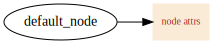
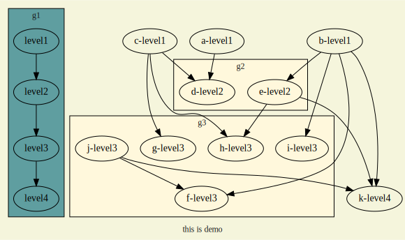
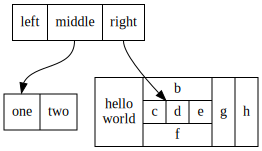

dot language 学习笔记
Table of Contents
1 dot 语言简介
DOT语言是一种文本图形描述语言。文件扩展名通常为.gv或.dot 。它可以导出的格式有：GIF、PNG、SVG、PDF及PostScript。
2 基本语法
2.1 常用图形
- box、polygon、ellipse、circle、point、triangle、invtriangle、plaintext、diamond
digraph shapes {
"Box"[shape=box]
"Polygon"[shape=polygon,sides=7] /* 定义了一个7边行，sides属性定义多边形边的数量 */
"Ellipse"[shape=ellipse]
"Circle"[shape=circle]
"Point"[shape=point]
"triangle"[shape=triangle]
"invtriangle"[shape=invtriangle]
"plaintext"[shape=plaintext]
"diamond"[shape=diamond]
}
想了解更多内容，那就点击我。
2.2 常用线条
- 无向线条、又向线条、双向线条
digraph lines {
"Undirected1"->"Undirected2"[arrowhead=none]
"Undirected1"->"Directed1"
"Directed1"->"Directed2"[dir=both]
}
- 实线、虚线、点线、加粗、透明
digraph lines2 {
rankdir=LR
"solid"->"dashed"[style=solid]
"dashed"->"dotted"[style=dashed]
"dotted"->"bold"[style=dotted]
"bold"->"invis"[style=bold]
"invis"->"solid"[style=invis]
}
2.3 常用箭头
- box、crow、curve、icurve、diamond、dot、inv、none、normal、tee、vee
digraph arrow {
rankdir=LR
"box"->"crow"[arrowhead=box]
"crow"->"curve"[arrowhead=crow]
"curve"->"diamond"[arrowhead=curve]
"diamond"->"dot"[arrowhead=diamond]
"dot"->"inv"[arrowhead=dot]
"inv"->"none"[arrowhead=inv]
"none"->"normal"[arrowhead=none]
"normal"->"tee"[arrowhead=normal]
"tee"->"vee"[arrowhead=tee]
"vee"->"box"[arrowhead=vee]
#来个高级的用法
a->b[arrowhead=lcrowortee]
}
想了解更多内容，那就点击我。
2.4 常用属性
2.4.1 Node常用属性
| 属性名 | 默认值 | 说明 |
|---|---|---|
| color | black | node图形颜色,see color values |
| fontcolor | black | 字体颜色 |
| fontname | Times-Roman | 字体 |
| fontsize | 14 | 字体大小 |
| image | node背景图片地址 | |
| label | node name | node 显示内容 |
| shape | ellipse | 形状 |
| style | 图形样式，eg. bold、dotted、filled | |
| height | .5 | 最低高度尺寸 |
| width | .75 | 最低宽度尺寸 |
| URL | 点击跳转地址 | |
| target | 点击跳转打开方式 |
digraph demo_node {
rankdir=LR
"default_node"
"node"[shape=box,color=antiquewhite,style=filled,label="node attrs",fontcolor=brown,fontsize=10,URL="http://www.baidu.com",target="_brank"]
"default_node"->"node"
}

2.4.2 Edge常用属性
| 属性名 | 默认值 | 说明 |
|---|---|---|
| arrowhead | normal | 箭头样式 |
| arrowsize | 1.0 | 箭头尺寸 |
| color | black | 颜色 |
| dir | forward | 箭头方向 |
| edgeURL | 点击跳转地址 | |
| fontcolor | black | 字体颜色 |
| fontname | Times-Roman | 字体 |
| fontsize | 14 | 字体大小 |
| headport | 线条头部连接处，eg.n、ne、e、se、s、sw、w、nw | |
| label | 描述内容 | |
| labelfontcolor | black | label字体颜色 |
| labelfontname | Times-Roman | label字体 |
| labelfontsize | 14 | label字体大小 |
| style | 图形样式，eg.bold、dotted、filled | |
| tailport | 线条尾部连接处，eg.n、ne、e、se、s、sw、w、nw | |
| weight | 1 | integer cost of stretching an edge |
digraph demo_edge {
rankdir=LR
a->b[label="Yes",labelfontcolor=blue]
edge[arrowhead=box,arrowsize=1.5,color=red,dir=both,style=dotted,weight=10]
b->c
}
2.4.3 Graph常用属性
| 属性名 | 默认值 | 说明 |
|---|---|---|
| bgcolor | 背景颜色 | |
| color | black | for clusters,outline color,and fill color |
| dpi | 96 | 图像输出像素 |
| fillcolor | black | cluster fill color |
| fontcolor | black | 字体颜色 |
| fontname | Times-Roman | 字体 |
| fontsize | 14 | 字体大小 |
| label | 描述内容 | |
| landscape | true:orientation=landscape | |
| rank | 子图等级限制， same,min,max,source,sink | |
| rankdir | TB | 图片排列方式，LR(left to right) or TB(top to bottom) |
| size | 最大图片尺寸 | |
| style | 图片样式 | |
| stylesheet | pathname or URL to XML style sheet for SVG | |
| URL | 点击跳转地址 | |
| target | 点击跳转打开方式 |
digraph demo_graph {
bgcolor=beige
fontcolor=gray10
fontsize=12
label="this is demo"
rankdir=TB
{rank=same; "level1" "a-level1" "b-level1" "c-level1"}
{rank=smae; "level2" "d-level2" "e-level2"}
{rank=same; "level3" "f-level3" "g-level3" "h-level3" "i-level3" "j-level3"}
{rank=same; "level4" "k-level4"}
"level1"->"level2"->"level3"->"level4"
"a-level1"->"d-level2"
"e-level2"->{"h-level3", "k-level4"}
"b-level1"->{"e-level2", "f-level3", "i-level3", "k-level4"}
"c-level1"->{"d-level2", "g-level3", "h-level3"}
"j-level3"->{"f-level3", "k-level4"}
}
2.5 子图
dot支持将一组元素组合成一个子图，且一个图形可以包含一个及多个子图。
使用子图需要注意以下两点：
- 子图node无法在主图rank中使用。
- 子图命名必须以："cluster"作为前缀。
digraph demo_subgraph {
bgcolor=beige
fontcolor=gray10
fontsize=12
label="this is demo"
rankdir=TB
/* 特别注意: 子图命名必须以"cluster"为前缀 */
subgraph "cluster_g1" {
label="g1"
bgcolor=cadetblue
"level1"->"level2"->"level3"->"level4"
}
subgraph "cluster_g2" {
label="g2"
bgcolor=cornsilk
"level2"
"d-level2"
"e-level2"
}
subgraph "cluster_g3" {
label="g3"
bgcolor=cornsilk
"level3"
"f-level3"
"g-level3"
"h-level3"
"i-level3"
"j-level3"
}
"a-level1"->"d-level2"
"e-level2"->{"h-level3", "k-level4"}
"b-level1"->{"e-level2", "f-level3", "i-level3", "k-level4"}
"c-level1"->{"d-level2", "g-level3", "h-level3"}
"j-level3"->{"f-level3", "k-level4"}
}

2.6 其他用法
2.6.1 label使用html标签
digraph html {
abc [shape=none, margin=0, label=<
<TABLE BORDER="0" CELLBORDER="1" CELLSPACING="0" CELLPADDING="4">
<TR><TD ROWSPAN="3"><FONT COLOR="red">hello</FONT><BR/>world</TD>
<TD COLSPAN="3">b</TD>
<TD ROWSPAN="3" BGCOLOR="lightgrey">g</TD>
<TD ROWSPAN="3">h</TD>
</TR>
<TR><TD>c</TD>
<TD PORT="here">d</TD>
<TD>e</TD>
</TR>
<TR><TD COLSPAN="3">f</TD>
</TR>
</TABLE>>];
}
2.6.2 使用label定义子节点
digraph structs {
node [shape=record];
struct1 [shape=record,label="<f0> left|<f1> middle|<f2> right"];
struct2 [shape=record,label="<f0> one|<f1> two"];
struct3 [shape=record,label="hello\nworld |{ b |{c|<here> d|e}| f}| g | h"];
struct1:f1 -> struct2:f0;
struct1:f2 -> struct3:here;
}

3 总结
通过这几天对dot语言的学习，发现它还是非常强大和灵活的。只要能够发挥你的组合及想象能力，肯定是能够满足一些基本文档图表的绘制需求。而且还摆脱了普通制图功能繁琐的排版工作，还是非常适合有一定编程基础的用户使用的。
个人非常厌恶繁琐的排版工作，因此emacs + org-mode + Graphviz会是以后书写文档的必备工具。
之后有时间在将ditaa及plantuml集成进来，毕竟用他们绘制一些专业图表还是更加快捷方便一些。
参考文献：
http://www.cnblogs.com/chenfanyu/archive/2013/01/27/2878845.html
http://coldnew.github.io/blog/2013/07/13_07e15.html
http://www.graphviz.org